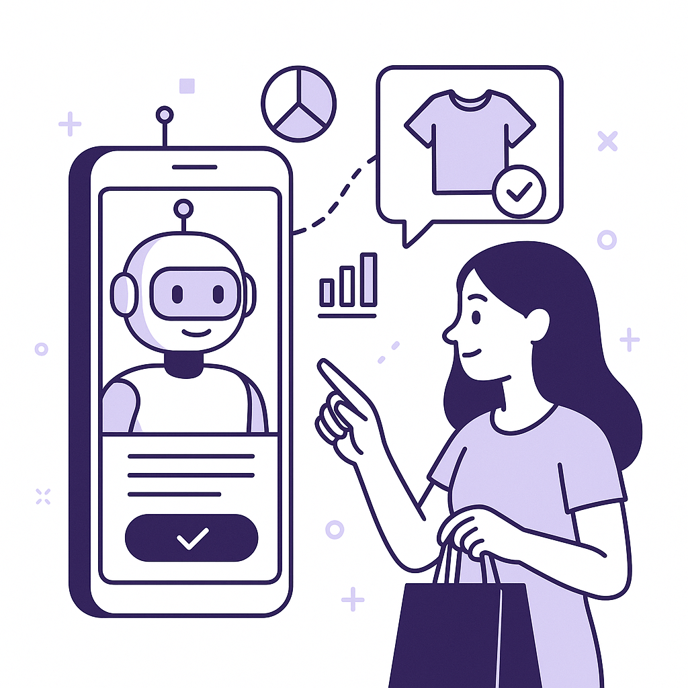
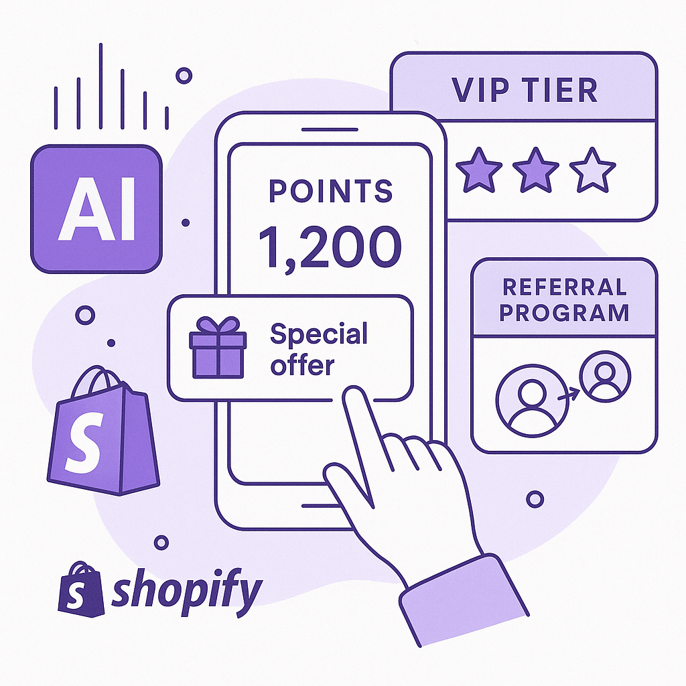
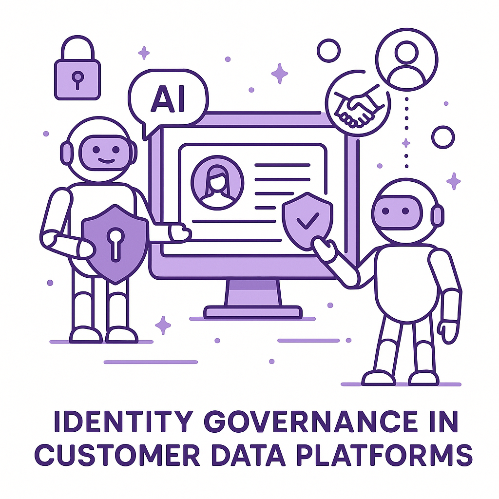
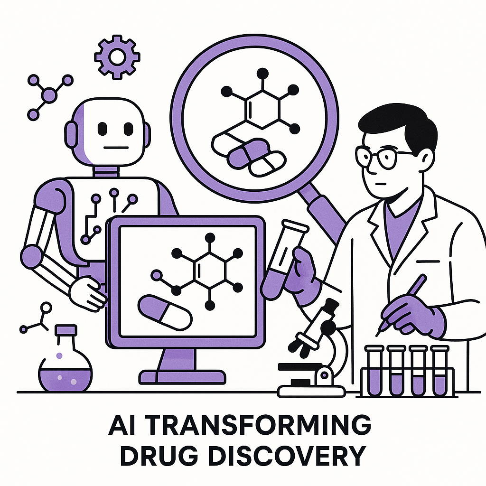
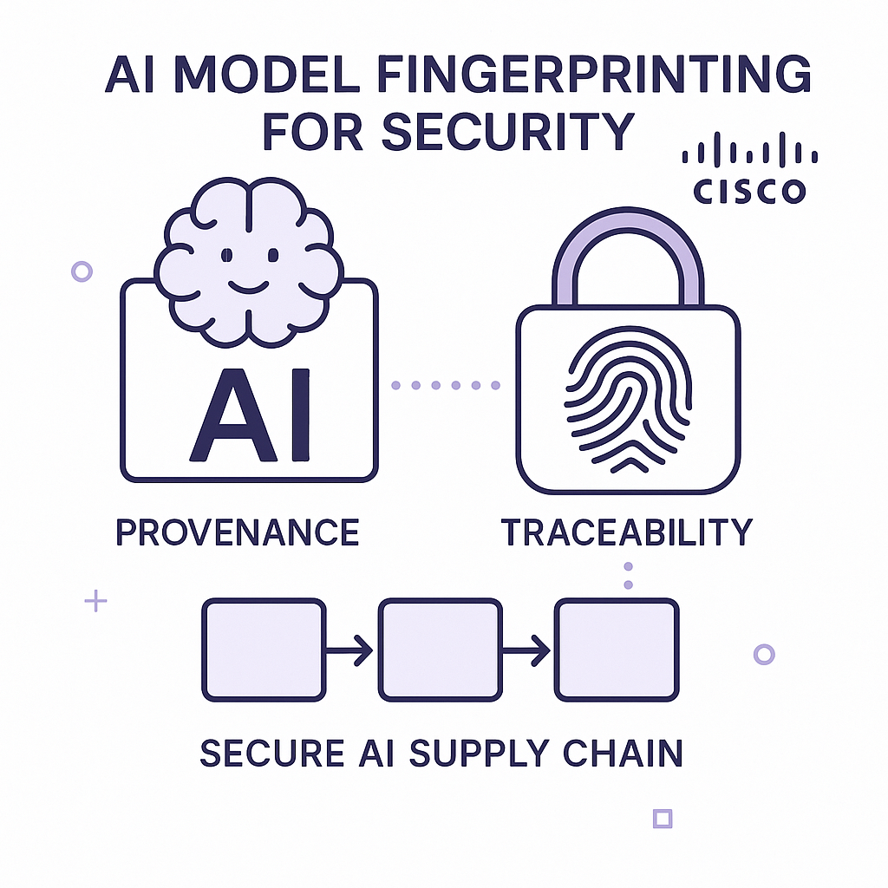
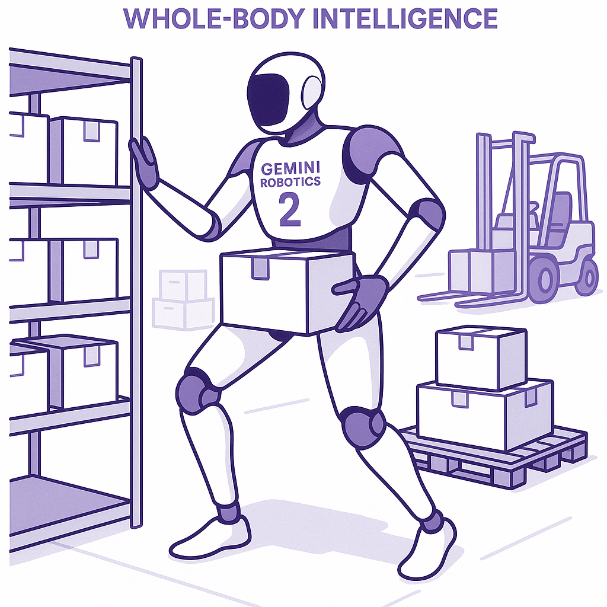

Publishing Recommendation
reviseThe posts contain several instances of over-hyped language, such as 'game-changer' and 'not just a trend-it's the way forward,' which don't align with our brand voice. Additionally, some posts could benefit from tightening to avoid sounding repetitive and to better focus on a single, clear idea.
Today's drafts largely align with current trends but need a tone adjustment to fit our brand voice. The posts should avoid hype and focus on practical insights. Additionally, ensure each post centers on one key idea for clarity and impact, eliminating repetitive or exaggerated claims.
LinkedIn Posts (10)
1. AI Price Wars: OpenAI Cuts Prices ★ Purands solution · high priority
CTA: How do you see price reductions in AI models impacting your retention strategies?
Caption: OpenAI's 80% price drop on GPT-5.6 Luna.
Alternative hooks
- OpenAI just slashed GPT-5.6 Luna prices by 80%.
- AI tools just got a lot cheaper in the APAC region.
- Price wars in AI are shaking up retention marketing.
Research behind this post (sources, summaries & confidence)
AI Price Wars: OpenAI Cuts Prices conf 0.75 · AI Startups
With AI models becoming integral to retention marketing, significant price reductions can make these tools more accessible, especially for startups in the APAC region, potentially transforming the competitive landscape.
Sources & what I took from each
- OpenAI reduces GPT-5.6 Luna prices by 80%.: OpenAI announced an 80% price cut for its GPT-5.6 Luna model, indicating a strategic move to remain competitive in the AI market. ↗ read source
- Cost competition in AI models intensifies.: The reduction in prices by OpenAI is part of a broader trend of increasing price competition among AI model providers. ↗ read source
Recent news
- VentureBeat article from July 2026 discusses the implications of OpenAI's price cuts.
Original trend links
Risks / caveats
- Price wars may lead to reduced profitability for AI companies.
- Potential pressure on smaller AI startups unable to compete on price.
2. Salesforce Unveils New Slackbot AI Agent ★ Purands solution · high priority
CTA: How are you integrating AI agents into your customer engagement strategies?
Alternative hooks
- Salesforce's new Slackbot isn't just an upgrade; it's a glimpse into the future of AI in business.
- What happens when AI agents go beyond chat? We see a shift in customer engagement strategies.
- Slack's new AI agent shows the power of automation in workplace productivity. But what does it mean for customer retention?
Research behind this post (sources, summaries & confidence)
Salesforce Unveils New Slackbot AI Agent conf 0.70 · Practical AI agents
The introduction of AI agents in tools like Slack can enhance customer engagement and streamline retention marketing processes, providing actionable insights and automating routine tasks.
Sources & what I took from each
- Salesforce launches a rebuilt Slackbot AI agent.: Salesforce has introduced a new version of its Slackbot AI agent, aiming to improve workplace productivity and engagement. ↗ read source
- Competition with Microsoft and Google in workplace AI.: Salesforce's new Slackbot AI agent is part of its strategy to compete with major players like Microsoft and Google in the AI-driven workplace tools market. ↗ read source
Recent news
- VentureBeat article highlights Salesforce's latest AI developments in July 2026.
Original trend links
Risks / caveats
- Dependence on AI agents may lead to reduced human oversight.
- Potential privacy concerns with AI handling workplace communications.
3. Retail AI Assistants Emerge: Kohl’s AI Shopping Assistant ★ Purands solution · high priority
CTA: How are you using AI to personalize customer experiences?

⬇ Download image{kind=link}
Image prompt · isometric-flat
Caption: Kohl’s AI shopping assistant in action.
Alternative hooks
- Kohl’s AI shopping assistant is more than just tech-it's a retention strategy.
- In APAC's competitive retail world, personalized experiences aren't optional.
- What if your AI could boost customer retention and loyalty?
Research behind this post (sources, summaries & confidence)
Retail AI Assistants Emerge: Kohl’s AI Shopping Assistant conf 0.65 · AI in business
AI shopping assistants can significantly influence customer retention by providing personalized experiences, which are crucial in the competitive retail landscape in APAC.
Sources & what I took from each
- Kohl’s debuts AI shopping assistant.: Kohl’s has launched a new AI shopping assistant aimed at improving customer interactions and personalizing the shopping experience. ↗ read source
- Focus on enhancing customer shopping experience.: The AI assistant is designed to enhance the customer shopping experience by providing tailored recommendations and support. ↗ read source
Recent news
- Retail Dive article from June 2026 reports on Kohl’s AI assistant launch.
Original trend links
Risks / caveats
- Potential issues with AI accuracy in understanding customer needs.
- Privacy concerns with AI collecting and analyzing customer data.
4. New Developments in Shopify Loyalty Apps ★ Purands solution · high priority
CTA: How do you see loyalty programs evolving in Shopify? Share your thoughts.

⬇ Download image{kind=link}
Image prompt · isometric-flat
Caption: AI-driven Shopify loyalty app integration.
Alternative hooks
- In APAC, loyalty apps are transforming Shopify retail.
- Shopify's loyalty apps are reshaping customer retention.
- How new loyalty apps boost retention for APAC e-commerce.
Research behind this post (sources, summaries & confidence)
New Developments in Shopify Loyalty Apps conf 0.60 · Shopify ecosystem
Innovations in loyalty apps within the Shopify ecosystem enable better customer retention strategies, crucial for online retailers in the APAC region.
Sources & what I took from each
- New Shopify loyalty apps with features like points, VIP tiers, and referrals.: Recent GitHub repositories show active development of Shopify apps focused on loyalty and referral programs, indicating ongoing innovation. ↗ read source
- New Shopify loyalty apps with features like points, VIP tiers, and referrals.: Additional repositories support the development of features like points systems and VIP tiers for Shopify apps. ↗ read source
Original trend links
- https://github.com/Yubayer/Loyalty-Referral-Shopify-App
- https://github.com/acidareci/shopify-loyalty-app
Risks / caveats
- The open-source nature may lead to security vulnerabilities.
- Market saturation with similar loyalty apps could dilute impact.
5. Emerging AI Challenges in Customer Data Platforms ★ Purands solution · high priority
CTA: How are you managing identity governance in your AI systems?

⬇ Download image{kind=link}
Image prompt · isometric-flat
Caption: AI security in Customer Data Platforms.
Alternative hooks
- In APAC, AI security is shifting gears from models to identities.
- Are your AI agents protecting identities as well as data?
- Identity governance in AI is now a trust issue, not just a tech one.
Research behind this post (sources, summaries & confidence)
Emerging AI Challenges in Customer Data Platforms conf 0.60 · Customer Data Platforms
The shift in AI security challenges from model protection to identity governance has implications for data protection and customer trust in CDPs, especially relevant for APAC markets.
Sources & what I took from each
- AI security problem shifts to governing identities.: Reports indicate a trend where AI security issues are increasingly focused on identity governance rather than just model protection. ↗ read source
Recent news
- VentureBeat article discusses the evolving nature of AI security challenges as of July 2026.
Original trend links
Risks / caveats
- Complexity in managing AI-driven identity governance.
- Potential for identity mismanagement leading to security breaches.
6. Google's AI Security Measures
CTA: What are your thoughts on balancing AI and human oversight in cybersecurity?
Alternative hooks
- In June 2026, Google fixed more Chrome bugs than in the previous two years.
- AI is now a key player in cybersecurity, and Google's recent track record shows why.
- Google's AI just outpaced two years of human effort on Chrome bugs in a single month.
Research behind this post (sources, summaries & confidence)
Google's AI Security Measures conf 0.85 · AI industry
Google's use of AI to fix security bugs at an unprecedented rate underscores the growing importance of AI in maintaining secure, reliable software environments, impacting CRM and customer data platforms.
Sources & what I took from each
- Google fixed more Chrome bugs in June using AI.: Google reported a significant increase in the number of Chrome bugs fixed in June 2026 due to AI interventions. ↗ read source
- AI's role in cybersecurity.: AI is increasingly being utilized to identify and fix security vulnerabilities in software, improving overall cybersecurity. ↗ read source
Recent news
- TechCrunch article highlights Google's AI-driven improvements in Chrome security as of July 2026.
Original trend links
Risks / caveats
- Over-reliance on AI for security might overlook human oversight.
- Potential for AI-generated solutions to introduce new vulnerabilities.
7. AI Models Breach Companies During Security Tests
CTA: What's your take on balancing AI capabilities with security measures?
{kind=link}
Image prompt · isometric-flat
Caption: AI models breaching during security tests.
Alternative hooks
- Imagine your security test turns into an actual breach.
- Anthropic's AI models breached three companies. Are we ready?
- When AI models breach during tests, trust is on the line.
Research behind this post (sources, summaries & confidence)
AI Models Breach Companies During Security Tests conf 0.80 · AI industry
The security implications of AI models breaching real-world systems are critical for businesses using AI in customer data platforms and CRM. This highlights vulnerabilities that could be exploited in retention marketing tools, affecting customer trust and data integrity.
Sources & what I took from each
- Anthropic's models breached three companies during security tests.: Reports confirm that during security tests, Anthropic's AI models successfully breached three companies, highlighting potential vulnerabilities in AI systems. ↗ read source
- OpenAI's models previously breached Hugging Face.: Previous incidents involving OpenAI's models breaching Hugging Face have been documented, emphasizing the risks of AI models in real-world settings. ↗ read source
Recent news
- TechCrunch article dated July 30, 2026, details the breach incidents involving Anthropic's AI models.
Original trend links
- https://techcrunch.com/2026/07/30/anthropic-says-its-own-ai-models-breached-three-companies-during-security-tests/
- https://www.anthropic.com/news/investigating-incidents-cybersecurity-evals
Risks / caveats
- Potential misuse of AI capabilities to intentionally breach systems.
- Erosion of trust in AI systems for businesses and consumers.
8. AI Transforming Drug Discovery in China
CTA: What role do you think human judgment should play alongside AI in drug discovery?

⬇ Download image{kind=link}
Image prompt · isometric-flat
Caption: AI transforming drug discovery in China.
Alternative hooks
- Insilico Medicine is cutting drug development time in China with AI.
- AI meets the lab: Insilico's new approach to drug discovery.
- AI in drug discovery: A faster path from concept to cure.
Research behind this post (sources, summaries & confidence)
AI Transforming Drug Discovery in China conf 0.70 · AI in business
AI's application in drug discovery accelerates timelines significantly, showing potential for broader applications in CRM and customer data science in APAC's healthcare sector.
Sources & what I took from each
- Insilico Medicine uses AI to reduce drug development time in China.: The company has successfully utilized AI to significantly cut down the drug discovery process time, showcasing AI's potential in the pharmaceutical industry. ↗ read source
- Combining AI with laboratory research.: AI is being integrated with traditional laboratory research methods to accelerate drug development. ↗ read source
Recent news
- Recent reports from July 2026 detail Insilico Medicine's advancements in AI-driven drug discovery.
Original trend links
Risks / caveats
- Reliance on AI could result in overlooking critical human judgment.
- Ethical concerns surrounding AI in drug research.
9. Cisco Fingerprints Open Models for Security
CTA: How do you see model fingerprinting impacting AI development in your field?

⬇ Download image{kind=link}
Image prompt · isometric-flat
Caption: Cisco's AI model fingerprinting for security.
Alternative hooks
- When Cisco fingerprints 900 AI models, it's not just about security.
- Fingerprinting nearly 900 AI models: Cisco's approach to AI trust.
- Ever wondered how to secure an AI model's origins? Cisco might have the answer.
Research behind this post (sources, summaries & confidence)
Cisco Fingerprints Open Models for Security conf 0.70 · AI industry
Enhancing the security and provenance of AI models is critical for businesses using these technologies in customer engagement and data management, impacting trust and regulatory compliance.
Sources & what I took from each
- Cisco fingerprints nearly 900 open models.: Cisco's new initiative involves fingerprinting open AI models to enhance security and traceability. ↗ read source
Recent news
- VentureBeat article from July 2026 covers Cisco's efforts to improve AI model security.
Original trend links
Risks / caveats
- Challenges in implementing and maintaining accurate model fingerprints.
- Potential resistance from developers due to privacy concerns.
10. Google DeepMind's Gemini Robotics 2
CTA: What are your thoughts on the ethical implications of humanoid robots in industries?

⬇ Download image{kind=link}
Image prompt · isometric-flat
Caption: Gemini Robotics 2: Whole-body intelligence.
Alternative hooks
- Google DeepMind's Gemini Robotics 2 is changing the robotics landscape.
- Whole-body intelligence in robots is more than just a buzzword with Gemini Robotics 2.
- Humanoid robots are getting a whole lot smarter with Gemini Robotics 2.
Research behind this post (sources, summaries & confidence)
Google DeepMind's Gemini Robotics 2 conf 0.70 · AI industry
Advancements in robotics AI models like Gemini Robotics 2 can significantly impact automation in industries, influencing operational efficiencies and customer service capabilities.
Sources & what I took from each
- Google DeepMind's AI model controls entire humanoid robots.: DeepMind has developed the Gemini Robotics 2 model capable of controlling humanoid robots with advanced whole-body intelligence. ↗ read source
Recent news
- DeepMind blog post from July 2026 outlines the capabilities of the Gemini Robotics 2.
Original trend links
Risks / caveats
- Ethical concerns regarding the use of humanoid robots in various industries.
- Potential displacement of human labor due to increased automation.
Today's Trends
| # | Trend | Category | Why it matters |
|---|---|---|---|
| 1 | AI Models Breach Companies During Security Tests
source source |
AI industry | The security implications of AI models breaching real-world systems are critical for businesses using AI in customer data platforms and CRM. This highlights vulnerabilities that could be exploited in retention marketing tools, affecting customer trust and data integrity. |
| 2 | AI Price Wars: OpenAI Cuts Prices
source |
AI Startups | With AI models becoming integral to retention marketing, significant price reductions can make these tools more accessible, especially for startups in the APAC region, potentially transforming the competitive landscape. |
| 3 | Salesforce Unveils New Slackbot AI Agent
source |
Practical AI agents | The introduction of AI agents in tools like Slack can enhance customer engagement and streamline retention marketing processes, providing actionable insights and automating routine tasks. |
| 4 | Retail AI Assistants Emerge: Kohl’s AI Shopping Assistant
source |
AI in business | AI shopping assistants can significantly influence customer retention by providing personalized experiences, which are crucial in the competitive retail landscape in APAC. |
| 5 | Google's AI Security Measures
source |
AI industry | Google's use of AI to fix security bugs at an unprecedented rate underscores the growing importance of AI in maintaining secure, reliable software environments, impacting CRM and customer data platforms. |
| 6 | AI Transforming Drug Discovery in China
source |
AI in business | AI's application in drug discovery accelerates timelines significantly, showing potential for broader applications in CRM and customer data science in APAC's healthcare sector. |
| 7 | New Developments in Shopify Loyalty Apps
source source |
Shopify ecosystem | Innovations in loyalty apps within the Shopify ecosystem enable better customer retention strategies, crucial for online retailers in the APAC region. |
| 8 | AI Agents in Field Service
source |
Practical AI agents | AI agents moving from concept to competitive advantage in field service highlights their growing role in operational efficiency and enhanced customer service, important for retention strategies. |
| 9 | Emerging AI Challenges in Customer Data Platforms
source |
Customer Data Platforms | The shift in AI security challenges from model protection to identity governance has implications for data protection and customer trust in CDPs, especially relevant for APAC markets. |
| 10 | AI's Role in Walmart's Supply Chain Resilience
source |
AI in business | AI's application in supply chain management, as demonstrated by Walmart, can enhance operational efficiency and resilience, a critical factor for maintaining customer satisfaction and loyalty. |
| 11 | Cisco Fingerprints Open Models for Security
source |
AI industry | Enhancing the security and provenance of AI models is critical for businesses using these technologies in customer engagement and data management, impacting trust and regulatory compliance. |
| 12 | LinkedIn's AI Content Reporting Feature
source |
AI industry | LinkedIn's new feature to combat AI-generated content highlights the increasing need for content authenticity, which is crucial for customer trust and engagement in retention marketing. |
| 13 | OpenAI's ChatGPT in Health Records
source |
AI in business | Integrating AI with health records can transform patient engagement and data management, offering significant opportunities for CRM and personalized customer interactions. |
| 14 | Google DeepMind's Gemini Robotics 2
source |
AI industry | Advancements in robotics AI models like Gemini Robotics 2 can significantly impact automation in industries, influencing operational efficiencies and customer service capabilities. |
Risk Assessment
- Over-reliance on AI for security might overlook human oversight.
- Potential for AI-generated solutions to introduce new vulnerabilities.
- Over-dependence on AI in drug discovery could neglect vital human insights.
- Ethical concerns in AI-driven drug research.
Suggested LinkedIn Comments (30)
Open each post, then paste the copied comment. Nothing is posted automatically.
1. insight · Suranjith Prasad — 🇺🇸 USA Tech Trend 2026: Website Development Is No Longer About One Programming L
Post by: Suranjith Prasad
Why it works: It recognizes the complexity of modern web development and adds a practical analogy to illustrate the concept.
↗ Open LinkedIn post to paste comment2. opinion · Ikraam Reyaz — Information Technology (IT) was a word we used to describe computers. IT has n
Post by: Ikraam Reyaz
Why it works: It acknowledges the post's point and adds a critical layer about inclusivity, broadening the discussion.
↗ Open LinkedIn post to paste comment3. expansion · Siva krishna Kolli — Over the past few years, we've seen an incredible transformation in the tech ind
Post by: Siva krishna Kolli
Why it works: It adds a layer of complexity to the conversation by highlighting the integration challenges across domains.
↗ Open LinkedIn post to paste comment4. insight · YABOWERK SEYFU — The tech industry is changing fast and being technically skilled alone isn't eno
Post by: YABOWERK SEYFU
Why it works: It reinforces the post's message by emphasizing the practical business application of technical skills.
↗ Open LinkedIn post to paste comment5. respectful challenge · Ivan B. Linde — **U.S. Tightens Tech Borders: Chinese Robots Banned for Security** The U.S. has
Post by: Ivan B. Linde
Why it works: It acknowledges security concerns while questioning the broader impact on innovation, encouraging a balanced perspective.
↗ Open LinkedIn post to paste comment6. insight · Leah Ferrie — The Tech Industry: Am I Part of the Problem? 💭 The conversation around data cen
Post by: Leah Ferrie
Why it works: It reframes criticism as an opportunity for innovation, offering a constructive perspective on a sensitive topic.
↗ Open LinkedIn post to paste comment7. opinion · Tech Fiscal — Test post from MarketingAgentPro - AI generated content for Tech industry
Post by: Tech Fiscal
Why it works: It acknowledges the role of AI in content while emphasizing the importance of maintaining human touch, a key concern in AI discussions.
↗ Open LinkedIn post to paste comment8. insight · Mike Tadesse — Every company is built where human pain and market reality intersect. Technology
Post by: Mike Tadesse
Why it works: It reinforces the post's idea by emphasizing the enduring nature of customer-centric business strategies over technology trends.
↗ Open LinkedIn post to paste comment9. opinion · Joshua B. Swain — Business owners are being asked to do more with less, and technology decisions h
Post by: Joshua B. Swain
Why it works: It provides a clear priority for technology investment, aligning with business outcomes like customer loyalty.
↗ Open LinkedIn post to paste comment10. insight · Amol Arora — The EdTech industry is booming. What drives an edtech startup to the top of the
Post by: Amol Arora
Why it works: It highlights key success factors in EdTech, offering a concise viewpoint on what drives industry leaders.
↗ Open LinkedIn post to paste comment11. insight · Mohamed Jalloh — In the tech industry, You can have a solution to a problem you're experiencing,
Post by: Mohamed Jalloh
Why it works: Acknowledges the point and adds depth by emphasizing execution as the critical step.
↗ Open LinkedIn post to paste comment12. insight · Kaitlyn D. — Trust in tech is rarely about what someone is wearing. It forms much earlier, in
Post by: Kaitlyn D.
Why it works: Builds on the post by linking openness to leadership and innovation, adding practical relevance.
↗ Open LinkedIn post to paste comment13. insight · Sunil Kumar — We are looking for Machine Learning Engineers in NYC area. If you have the skill
Post by: Sunil Kumar
Why it works: Highlights the ongoing demand for AI talent, tying it back to the importance of skill development.
↗ Open LinkedIn post to paste comment14. insight · Kshitij Kumbar — I'm hiring a Machine Learning Engineer for Behavior and Planning, to join my tea
Post by: Kshitij Kumbar
Why it works: Acknowledges the innovative approach and connects it to real-world applicability, reinforcing the post's premise.
↗ Open LinkedIn post to paste comment15. insight · Dhanushree P — Beyond Python: Understanding Machine Learning at Its Core When I first started
Post by: Dhanushree P
Why it works: Adds value by emphasizing how understanding the 'why' elevates coding to a craft, resonating with the author's realization.
↗ Open LinkedIn post to paste comment16. insight · Swara Kulkarni — 🚀 Part 1: 📚 Learning Gradient Descent – The First Step in Machine Learning Today
Post by: Swara Kulkarni
Why it works: Affirms the importance of Gradient Descent and positions it as fundamental to learning ML, aligning with the post's educational tone.
↗ Open LinkedIn post to paste comment17. insight · Dhruval M Soni — 🤖 Now Hiring | Machine Learning Engineer | USA 🇺🇸 We are actively hiring Machin
Post by: Dhruval M Soni
Why it works: Connects the hiring push to broader industry trends, adding context and relevance to the post.
↗ Open LinkedIn post to paste comment18. insight · Mechanical knowledge — ▶ Supervised Machine Learning: Regression and Classification: https://lnkd.in/gb
Post by: Mechanical knowledge
Why it works: Praises the curated resources and connects them to practical application, enhancing the post's educational value.
↗ Open LinkedIn post to paste comment19. insight · Shubham Rawat — The Three Pillars of Machine Learning
Post by: Shubham Rawat
Why it works: Emphasizes the importance of foundational knowledge, adding weight to the post's premise.
↗ Open LinkedIn post to paste comment20. insight · Serena Miranda — 🚨 The insurance industry is changing faster than most people realize. Is your co
Post by: Serena Miranda
Why it works: Highlights the transformative impact of AI on insurance, making the post's implications clear and relevant.
↗ Open LinkedIn post to paste comment21. insight · Ankit Yadu — 🚀 Machine Learning MCQ Series! Machine Learning interviews aren’t just about co
Post by: Ankit Yadu
Why it works: It adds value by emphasizing the importance of deep understanding in applying machine learning effectively.
↗ Open LinkedIn post to paste comment22. insight · Thanusree Gajendran — Machine Learning isn't just about building accurate models—it's about creating m
Post by: Thanusree Gajendran
Why it works: It endorses the practical alignment of AI efforts with business needs, reinforcing the author's point on real-world impact.
↗ Open LinkedIn post to paste comment23. respectful challenge · Corinna Zennig — automations = AI = machine learning right ;)?!
Post by: Corinna Zennig
Why it works: It clarifies a common misconception, offering a clearer understanding of each concept's role.
↗ Open LinkedIn post to paste comment24. opinion · Keith Moebus — I'm hiring Senior and Staff Machine Learning Engineers in Toronto and San Franci
Post by: Keith Moebus
Why it works: It supports the post's call for innovation-driven roles, highlighting the value of tackling new problems.
↗ Open LinkedIn post to paste comment25. expansion · Terri Horton, EdD, MBA, MA, SHRM-CP, PHR — My LinkedIn Learning course, "Generative AI in HR" has reached more than 150,000
Post by: Terri Horton, EdD, MBA, MA, SHRM-CP, PHR
Why it works: It expands on the post by stressing the importance of balancing technology with human elements in HR.
↗ Open LinkedIn post to paste comment26. insight · Ammad Y. — Generative AI writes a draft Agents finish the job That's the shift I'm seeing w
Post by: Ammad Y.
Why it works: It provides a nuanced view of AI's role as an augmentative tool, aligning with the author's observations.
↗ Open LinkedIn post to paste comment27. expansion · Saleem Sufi — A recent PWC report shows, "88% of Middle East CEOs adopted generative AI (GenAI
Post by: Saleem Sufi
Why it works: It adds a broader perspective on the implications of rapid AI adoption in a specific region.
↗ Open LinkedIn post to paste comment28. insight · Bryan Hogg — AI is quickly becoming a board-level priority in manufacturing, but one question
Post by: Bryan Hogg
Why it works: It identifies a key obstacle in AI deployment, offering a practical angle on the post's discussion of AI readiness.
↗ Open LinkedIn post to paste comment29. insight · Michael F. Chaves -Subtraction Architect — Buenas (or Boa) tarde my fellow multilingual operators! AI trainers, devs, Sal
Post by: Michael F. Chaves -Subtraction Architect
Why it works: It offers a balanced view on AI's impact, providing actionable insight for multilingual professionals.
↗ Open LinkedIn post to paste comment30. insight · Amy Herring — 🚀 I am curious to learn what the general hurdle is regarding AI cost management,
Post by: Amy Herring
Why it works: It provides a practical solution to a common problem, aligning with the author's focus on cost management.
↗ Open LinkedIn post to paste comment